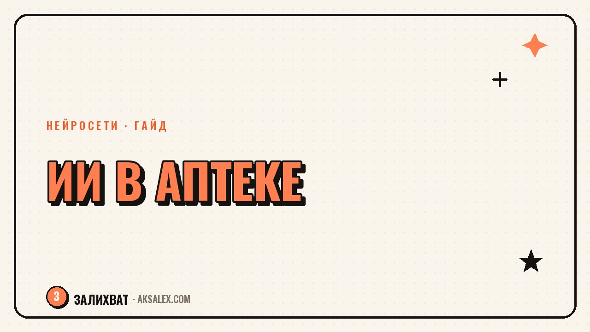

Нейросети для фармацевта: ускоряем работу в аптеке

Работа фармацевта - это не только выдать упаковку по рецепту. Это десятки вопросов за смену: чем заменить препарат, которого нет на складе, как объяснить разницу между дженериком и оригиналом, что ответить покупателю, который гуглил симптомы полночи. Нейросети не заменят твои знания и ответственность за консультацию, но могут снять рутину вокруг неё - поиск информации, оформление документов, подготовку к аттестации. Разберём, где это работает на практике, а где с ИИ лучше не экспериментировать.
Где нейросеть реально помогает фармацевту
Главная ценность нейросети в аптеке - это скорость сбора информации, которую потом проверяет человек. Пока ты физически не можешь держать в голове свойства всех позиций ассортимента, особенно если в аптеке тысячи наименований и регулярно появляются новинки. ИИ помогает быстро поднять справочные данные, чтобы ты принял решение осознанно, а не на глазок.
Подбор аналогов и синонимов
Классическая ситуация: нужного препарата нет на складе, а покупатель ждёт. Нейросеть за секунды выдаёт список аналогов по действующему веществу, с пояснением по дозировке и форме выпуска. Это не замена справочнику РЛС или инструкции, а черновик, который экономит время на первичный поиск - дальше ты проверяешь совместимость и противопоказания сам.
- Поиск по действующему веществу, а не только по торговому названию
- Сравнение дозировок и форм выпуска (таблетки, капсулы, суспензия)
- Подсказки по хранению и сроку годности похожих позиций
- Черновой ответ на вопрос 'чем заменить', который ты редактируешь и уточняешь
Консультации и объяснение покупателю
Часто сложность не в фармакологии, а в том, как простыми словами объяснить человеку без медицинского образования разницу между препаратами или важность дозировки. Нейросеть помогает собрать такое объяснение заранее, в спокойной обстановке - например, шаблон ответа на частый вопрос 'почему дженерик дешевле' или 'можно ли это ребёнку'.
Важно: финальный ответ покупателю всегда даёшь ты, с опорой на инструкцию и внутренние правила аптеки. Нейросеть - это тренажёр для формулировок и черновик текста для памятки на кассе, а не инструмент диагностики или назначения лечения.
Нейросеть не ставит диагноз и не выбирает лечение за фармацевта - она помогает быстрее найти справочную информацию и понятнее её объяснить. Ответственность и финальное решение остаются за человеком с профильным образованием.
Документы, отчёты и обучение
Вторая по объёму рутина после консультаций - бумажная работа: списки дефектуры, заявки поставщикам, протоколы по контролю температурного режима, подготовка к проверкам. Нейросеть помогает оформить текст по готовому шаблону: ты даёшь цифры и факты, она собирает их в читаемый документ.
Подготовка к аттестации и новым препаратам
Когда на рынок выходит новый препарат или меняется форма выпуска известного, нужно быстро разобраться в составе и показаниях. Нейросеть умеет кратко пересказать инструкцию обычным языком и составить карточку для памятки сотрудникам первого стола - это удобно при обучении новичков в смене.
- Сводка по новому препарату для памятки первого стола
- Черновик отчёта по дефектуре и заявке поставщику
- Вопросы для самопроверки перед внутренней аттестацией
- Шаблон протокола для проверяющих органов
Какие сервисы подойдут для этих задач
Для фармацевта не нужен специализированный медицинский ИИ - достаточно универсального текстового помощника, которому даёшь чёткий запрос и проверенные источники. Разница между сервисами в основном в скорости ответа, цене и том, насколько хорошо они работают с русским языком и медицинской терминологией.
| Сервис | Для чего подходит | Особенность |
|---|---|---|
| Общий текстовый ИИ (чат) | Черновики объяснений, сводки по препаратам, отчёты | Нужно всегда проверять факты по инструкции и РЛС |
| Голосовой ввод + ИИ-транскрибация | Быстрая фиксация устного отчёта по смене | Экономит время на ручной набор текста |
| Таблицы с ИИ-функциями | Учёт дефектуры, сроков годности, заявок | Удобно для повторяющихся отчётов по шаблону |
| Переводчик с ИИ | Инструкции на иностранном языке к импортным препаратам | Полезен при редких позициях, но не заменяет официальный перевод |
Границы: где нейросети не место
Есть зона, в которую нейросеть не должна попадать ни при каких обстоятельствах - это окончательный выбор препарата, дозировки или рекомендация по приёму конкретному покупателю. Это зона ответственности человека с фармацевтическим образованием и действующим сертификатом.
Также стоит с осторожностью относиться к любым цифрам и утверждениям о взаимодействии препаратов, которые выдаёт общий ИИ без ссылки на источник. Любое такое утверждение нужно сверять с официальной инструкцией или внутренними регламентами аптечной сети, а не принимать как факт.
- Не используй ИИ для окончательного выбора лечения покупателю
- Не копируй утверждения о взаимодействии препаратов без проверки по инструкции
- Не загружай персональные данные покупателей в сторонние сервисы
- Держи под рукой официальный источник для сверки любого факта от нейросети
Частые вопросы
Может ли нейросеть заменить фармацевта в аптеке?
Нет, нейросеть не имеет права и не умеет нести ответственность за консультацию и выдачу препарата. Она помогает собрать справочную информацию и оформить документы, а решение всегда принимает человек с профильным образованием.
Безопасно ли спрашивать у нейросети про взаимодействие лекарств?
Можно использовать как черновой ориентир, но любой ответ нужно проверять по официальной инструкции или справочнику РЛС. Нейросеть иногда выдаёт устаревшую или неточную информацию, особенно по редким комбинациям препаратов.
Какой сервис выбрать фармацевту для работы с текстами?
Подойдёт любой распространённый текстовый ИИ-помощник с поддержкой русского языка - для черновиков отчётов и объяснений хватает базовой бесплатной версии. Специализированный медицинский ИИ нужен редко, только в крупных сетях с отдельным регламентом.
Как использовать ИИ для подготовки к аттестации?
Нейросеть может кратко пересказать инструкцию к новому препарату и составить вопросы для самопроверки. Это ускоряет подготовку, но финальную проверку знаний всё равно проходишь по официальным материалам и внутренним стандартам сети.
Можно ли загружать данные покупателей в нейросеть?
Нет, персональные данные и сведения о покупках конкретных людей нельзя передавать в сторонние сервисы - это нарушение конфиденциальности и внутренних регламентов аптеки. Все примеры и запросы к ИИ должны быть обезличенными.
Раз тема оказалась полезной, вот что почитать следующим. Скучных ниш почти не бывает - бывает скучная подача. Разбираем, как найти живые истории в сухой теме.
Читать статью →а не вручную